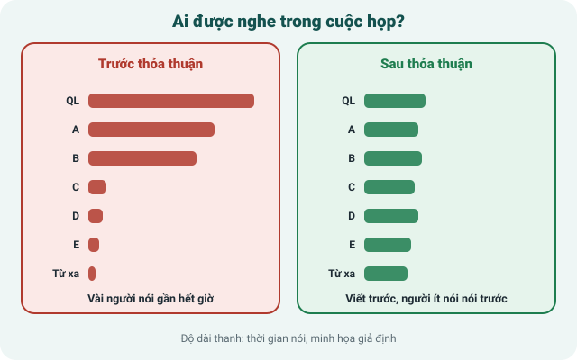

K8 · Làm việc nhóm và tôn trọng khác biệt › Bậc 5 Dẫn dắt
Xây đội có vai trò rõ, ai cũng được đóng góp
Bài này làm Tờ 6: Thỏa thuận làm việc của đội. Mẫu in. Quyền không bị phân biệt đối xử ở nơi làm việc được bàn ở trachnhiemxahoi.com. Ở đây ta học phần kỹ năng: cách tổ chức đội để ai cũng góp được sức.
1. Mục tiêu
- Cùng đội viết Thỏa thuận làm việc: vai trò, cách họp, cách chia việc, quy tắc cho hoàn cảnh khác nhau.
- Dùng 3 câu hỏi để đội tự xem lại cách phối hợp mỗi quý.
2. Khởi động truy xuất
- Sáu bước chuẩn bị đối thoại khó là gì?
- Khi hòa giải hai người, vì sao nên gặp riêng trước?
Đáp án
- Sự kiện; tác động; câu mở đầu; hỏi và nghe; cùng tìm cách; thỏa thuận và ngày xem lại.
- Để mỗi người nói thật, bớt căng, trước khi ngồi cùng nhau.
Xem lại: Xung đột, đối thoại khó.
3. Giải thích
Một đội hòa nhập là đội mà ai cũng biết việc của mình và dám góp ý. Điều này không tự có. Quản lý phải sắp xếp cách làm việc để nó xảy ra.
Thỏa thuận làm việc có bốn phần. Đội cùng viết, không phải quản lý viết một mình.
- Vai trò: ai chịu trách nhiệm việc gì, ai quyết việc gì. Khi hai người cùng nghĩ việc đó là của mình, hay không của ai, xung đột dễ nảy sinh.
- Cách họp: gửi tài liệu trước. Cho mọi người viết ý kiến ra giấy trước khi nói. Mời người ít nói lên tiếng trước, quản lý nói sau cùng.
- Chia việc không tên: ghi biên bản, dọn chỗ làm, đón người mới, trực ngoài giờ. Luân phiên công bằng, không mặc định giao cho cùng một người.
- Quy tắc cho hoàn cảnh khác nhau: người làm từ xa, làm ca, có con nhỏ, nói ngôn ngữ khác. Ví dụ: họp trong giờ mọi người cùng có mặt, quyết định quan trọng ghi lại bằng chữ.

Xem lại mỗi quý bằng 3 câu hỏi. Đội trả lời không ghi tên, rồi cùng bàn kết quả.
Ba câu xem lại cách phối hợp
- Điều gì giúp đội làm tốt?Giữ lại.
- Điều gì làm ai đó khó góp sức?Sửa trong quý tới.
- Một thay đổi nhỏ để thửAi lo, khi nào xem lại.
Hòa nhập không có nghĩa là ai cũng đồng ý. Đội tốt vẫn tranh luận gay gắt về việc. Điểm khác là mọi người tranh luận về ý tưởng, không công kích con người.
Khi chia việc, chọn người theo năng lực và mong muốn phát triển. Không dựa vào giới tính, tuổi, quê quán hay việc ai thân với quản lý.
4. Ví dụ tại nơi làm việc Việt Nam
Tình huống giả định. Anh Tâm là trưởng nhóm phát triển phần mềm 7 người ở một công ty công nghệ tại TP.HCM. Hai người làm từ xa ở Huế. Chị Ly có con nhỏ, cần về trước 17 giờ 30.
Trong các buổi họp, anh Tâm và hai lập trình viên lâu năm nói gần hết thời gian. Người làm từ xa hay nghe không rõ. Họp hay kéo dài sau 18 giờ, chị Ly thường phải về giữa chừng.
Cả nhóm cùng viết Tờ 6. Vai trò: mỗi tính năng có một người chịu trách nhiệm chính. Cách họp: tài liệu gửi trước một ngày, ai cũng viết ý kiến trước 5 phút đầu, anh Tâm nói sau cùng. Việc không tên: ghi biên bản luân phiên theo tuần. Hoàn cảnh khác nhau: họp từ 9 đến 16 giờ, quyết định ghi vào kênh chung.
Cuối quý, nhóm trả lời 3 câu không ghi tên. Một người làm từ xa viết vẫn khó chen lời khi tranh luận. Nhóm thử thêm: người điều phối gọi tên từng người ở cuối mỗi chủ đề.
Vì sao cách này tốt: thỏa thuận do cả nhóm viết. Quy tắc giải quyết đúng vướng mắc thật. Nhóm có cách xem lại và sửa tiếp.
5. Thực hành
Tình huống giả định. Bạn là tổ trưởng một tổ bảo trì 9 người ở khu công nghiệp tại Đồng Nai. Tổ làm ba ca. Hai thợ trẻ ít khi nói trong họp. Việc ghi sổ bàn giao ca luôn rơi vào chị Nga, người nữ duy nhất của tổ.
Viết Tờ 6 cho tổ của bạn.
Gợi ý 1
Tổ làm ba ca thì họp chung lúc nào? Thông tin truyền qua ca bằng cách nào?
Gợi ý 2
Ghi sổ bàn giao là việc không tên. Vì sao nó luôn rơi vào chị Nga? Chia lại thế nào cho công bằng?
Lời giải mẫu
- Vai trò: mỗi khu máy có một thợ chịu trách nhiệm chính trong ca; tổ trưởng quyết khi dừng máy trên 2 giờ.
- Cách họp: họp 15 phút lúc giao ca sáng thứ Hai, có cả ca đêm vừa tan; mời hai thợ trẻ báo cáo trước.
- Việc không tên: người trưởng ca nào thì ghi sổ bàn giao ca đó; luân phiên trưởng ca hằng tuần.
- Hoàn cảnh khác nhau: ca đêm nhận thông báo qua sổ và nhóm chat, không chỉ nghe miệng.
- Xem lại: cuối quý, 3 câu hỏi trên giấy không ghi tên, thả vào hộp ở phòng nghỉ.
6. Tự kiểm tra
Chọn đáp án. Mỗi lựa chọn đều có giải thích.
Câu 1. Ai nên viết Thỏa thuận làm việc của đội?
-
Chưa đúng. Quy tắc do một người viết thường bỏ sót vướng mắc thật của người khác, và ít được giữ.
-
Đúng. Đúng. Đội cùng viết thì quy tắc sát thực tế hơn, và mọi người có lý do để giữ.
-
Chưa đúng. Quy định chung của công ty vẫn cần. Nhưng cách làm việc của từng đội phải do đội thỏa thuận.
Câu 2. Trong họp, quản lý thường nói ý kiến của mình đầu tiên. Vấn đề là gì?
-
Chưa đúng. Nhanh nhưng mất ý kiến khác. Nhiều người sẽ không dám nói trái ý sếp.
-
Đúng. Đúng. Mời người khác nói trước, quản lý nói sau cùng, giúp đội nghe được nhiều ý hơn.
-
Chưa đúng. Vấn đề không nằm ở uy tín, mà ở việc đội không nghe được đủ ý kiến.
Câu 3. Việc pha trà, ghi biên bản luôn được giao cho người nữ trẻ nhất đội. Cách sửa hợp lý?
-
Chưa đúng. Mặc định giao việc không tên theo giới tính hay tuổi là không công bằng. Người đó mất thời gian cho việc chính.
-
Đúng. Đúng. Luân phiên giúp chia đều, và mọi người thấy việc nhỏ cũng là việc của cả đội.
-
Chưa đúng. Biên bản vẫn cần để giữ quyết định. Vấn đề là ai làm, không phải có làm hay không.
Câu 4. Đội tranh luận gay gắt về cách triển khai dự án. Điều này có nghĩa là gì?
-
Chưa đúng. Hòa nhập không có nghĩa là ai cũng đồng ý. Tranh luận về việc có thể giúp ra quyết định tốt hơn.
-
Đúng. Đúng. Đội dám tranh luận về việc là đội an toàn để nói. Quản lý giữ cho nó không thành công kích cá nhân.
-
Chưa đúng. Quyết vội có thể bỏ qua ý hay. Hãy nghe đủ, rồi mới chốt theo tiêu chí chung.
7. Phản tư
- Trong đội bạn, ai ít được nghe nhất trong các buổi họp? Vì sao?
- Việc không tên nào đang luôn rơi vào cùng một người?
8. Áp dụng thật
Trong 7 ngày tới, đưa Tờ 6 ra họp đội. Cùng đội điền ít nhất hai phần. Đặt ngày xem lại cuối quý.
9. Siêu dữ liệu
| skill | K8 · Làm việc nhóm và tôn trọng khác biệt |
|---|---|
| level | Bậc 5 · Dẫn dắt |
| group | N5 |
| framework_map | CSfW: 2b Connect and work with others; 2c Recognise and utilise diverse perspectives; SkillsFuture CCS: Building Inclusivity; Collaboration; NACE: Teamwork; Equity and Inclusion; LifeComp: S3 Collaboration (chỉ dẫn chiếu) |
| updated | 2026-11-14 |
Hoàn thành bài
Đánh dấu đã học để site gợi ý lịch ôn sau 1, 3 và 7 ngày. Dữ liệu chỉ lưu trên máy của bạn.
Lịch ôn gợi ý: